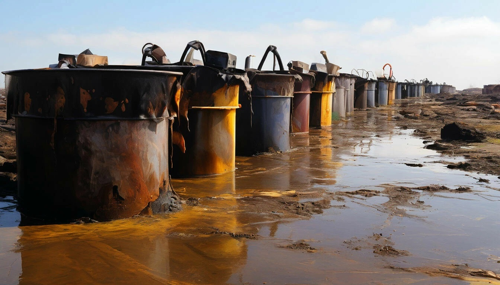
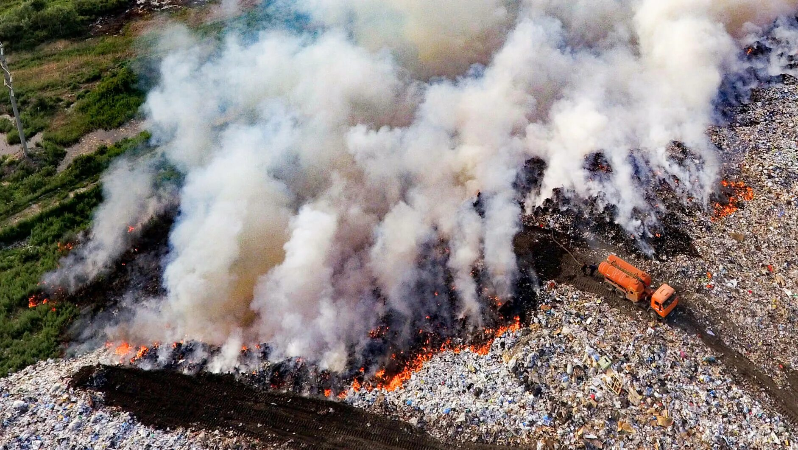
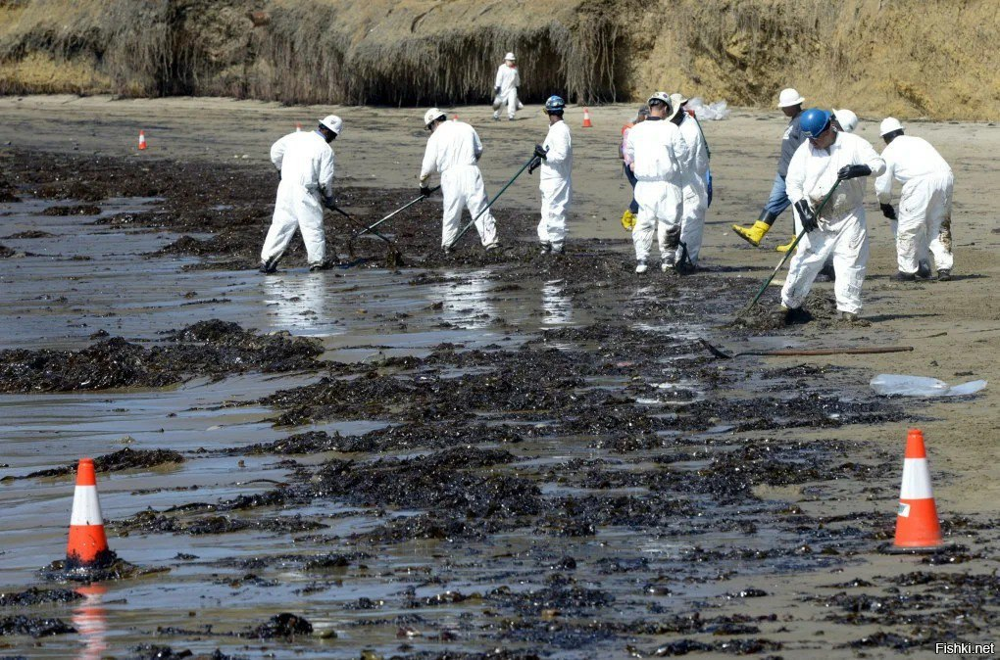
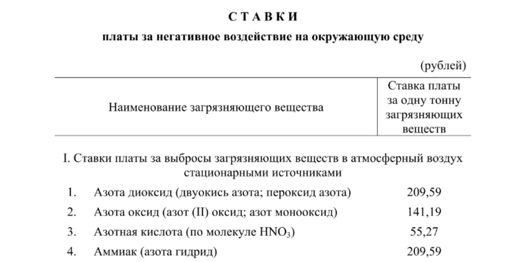
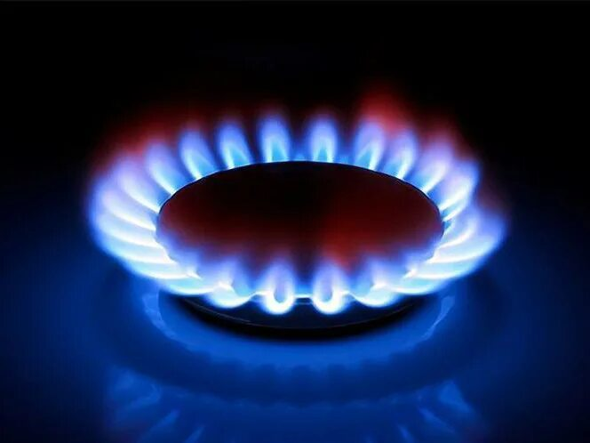
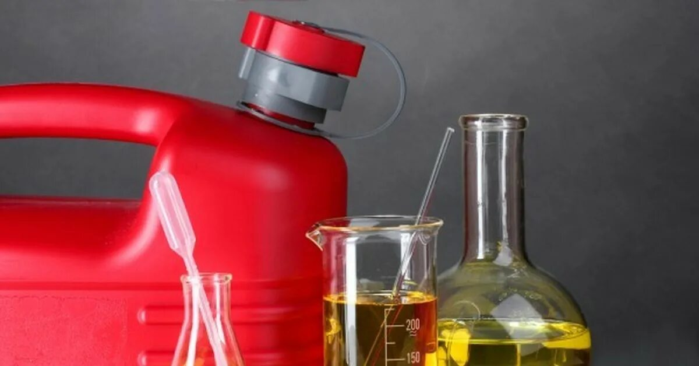
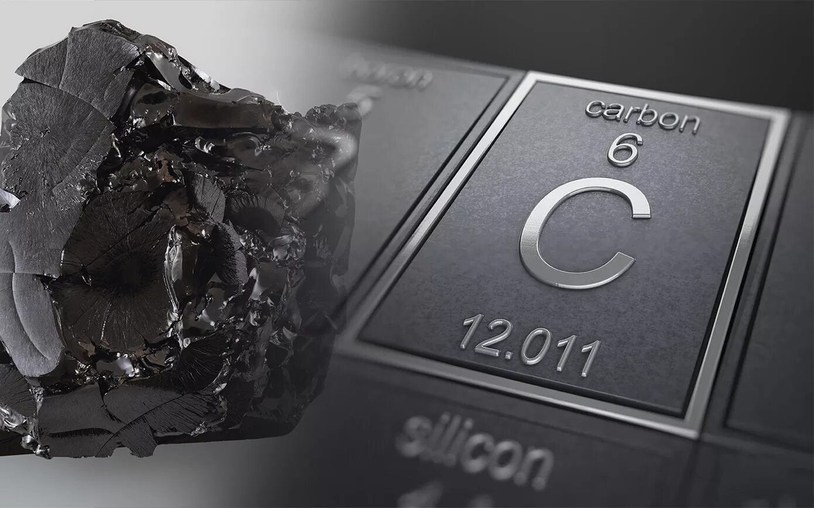

Патент РФ №2804427
Экологичная переработка нефтяных отходов
Без отходов. Без выбросов. С получением товарных продуктов
Запатентованная технология глубокой переработки нефтесодержащих отходов с эффективностью до 98%
Нефтяные отходы — источник экологических и финансовых рисков
Традиционные методы не решают проблему полностью

Выбросы при сжигании отходов

Долгосрочное хранение и накопление

Штрафы и платежи за НВОС
Ни одна из традиционных технологий не позволяет перерабатывать нефтяные отходы быстро и без вреда для окружающей среды
Технология, которая полностью устраняет отход
Мы применяем метод многостадийной термомеханической деструкции, который обеспечивает полную переработку любых нефтесодержащих отходов без образования вторичных загрязнений и вредных выбросов
Как работает технология
Многостадийный процесс переработки с контролируемым разложением углеводородов
1. Загрузка сырья
Нефтяные отходы подаются в реактор через систему дозирования
2. Первичная обработка
Удаление воды, кислорода и легких фракций
3. Глубокая деструкция
Разложение углеводородов при высокой температуре
4. Сепарация
Разделение газов, жидкостей и твердых фракций
5. Получение продуктов
Формирование топлива, воды и углеродного материала
На выходе — чистые и полезные продукты

Газ
Используется для поддержания работы установки

Жидкое топливо
Товарный продукт для промышленного применения
Вода
Соответствует нормам для сброса

Углерод
Используется как сорбент и технический материал
Глубина переработки до 98%
Результаты подтверждены испытаниями
100 кг исходного сырья → 60 кг безопасного остатка + 40 кг полезных продуктов
Получите расчет проекта
Оставьте контакты и объем отходов, подготовим техническое решение